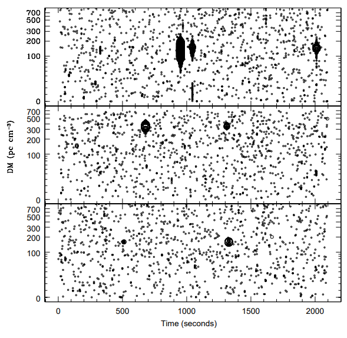

About Me
I'm Graham, a fifth-year PhD student in the Department of Physics and Astronomy at West Virginia University!
My work is centered on pulsars, fast-spinning neutron stars emitting beams of radio waves. I work with Prof.
Maura McLaughlin at the Center for Gravitational Waves and Cosmology, as
well as for NANOGrav and the IPTA. In
particular, I specialize in single pulse searches, studies of the interstellar medium, and noise modeling for
pulsar timing arrays.
I also enjoy science communication, and outreach is a big part of my academic life. From 2021 to 2023, I wrote for
Astrobites, writing accessible summaries of papers on arXiv. I also mentor
high school students interested in pulsars for the Pulsar Science
Collaboratory. When I'm not coding or writing, you can find me reading, gardening, making jam, or hiking
through the beautiful hills of West Virginia.
Research Interests: Pulsars, gravitational waves, rotating radio transients, giant pulses, single pulse studies,
fast radio bursts
Education: B.A., Astrophysics and Mathematics, Swarthmore College (2020); M.S., Physics, West Virginia University (2022);
Ph.D, Physics, West Virginia University (est. graduation Aug. 2026)
Languages: Python, Bash, LaTeX
Publications
Gravitational waves
 Image credit: B. Saxton, NRAO/AUI/NSF
Image credit: B. Saxton, NRAO/AUI/NSF
I'm a pulsar person. Pulsars are fast-spinning neutron stars with powerful magnetic fields that give rise to
beams of light - often radio waves - emanating from their magnetic poles. Since a pulsar's magnetic and
rotational axes are usually misaligned, this means that these beams sweep across the sky, like a cosmic
lighthouse. From our Earth-bound point of view, they appear to be brief, periodic pulses, often with
beautiful, complex structure. Besides being interest objects in their own right, they have one unusual
application: gravitational wave detection.
When someone talks about gravitational waves, the first thing that comes to mind might be ground-based
interferometers like LIGO, Virgo and KAGRA, which brought gravitational waves into the public eye with their
first direct detections in 2014. However, these instruments can only study a small portion of the gravitational
wave spectrum. As an analogy with light, imagine if we could only see the universe through optical telescopes -- no
x-ray telescopes like Chandra or infrared observatories like Spitzer. We'd miss out on so much!
Interferometers like LIGO operate very roughly in the 10 hertz to 10 kilohertz frequency band of the
gravitational wave spectrum, limiting what sorts of sources they can observe to things like merging
stellar-mass or intermediate-mass binary black holes, or gravitational waves from supernovae. However, binary
supermassive black holes also emit gravitational waves, with frequencies in the nanohertz range, forming a
stochastic gravitational wave background. LIGO can't see this -- but pulsar timing arrays can.
Pulsar timing arrays (PTAs) are designed to detect these binary supermassive black holes and other low-frequency
sources. We monitor numerous millisecond-period pulsars over years and decades with radio telescopes. Passing
gravitational waves change when pulses arrive at Earth, and by looking for certain characteristic behaviors in
these arrival times, we can search for this stochastic background and other interesting things, like individual
binary supermassive black holes, or more exotic structures like cosmic strings.
I'm a member of the North American Nanohertz Observatory for Gravitational
Waves, or NANOGrav, a PTA based in North America that primarily uses the Green Bank Telescope and the
now-collapsed Arecibo Observatory, along with CHIME and the Very Large Array. NANOGrav has come quite close to a
detection of the stochastic gravitational wave background. However, it's not only pulsar timing array out there;
sister collaborations in Europe, Australia, India, South Africa and China have released similar results.
We can increase the sensitivity of a PTA by adding in new pulsars and new telescopes -- so it makes sense to combine
the data from all of these PTAs into one large data set. The
International Pulsar Timing Array (IPTA) does just that, using data from the three major PTAs, some of it
stretching back to the 1990s. I'm a part of the team working on the IPTA's third data set, or DR3, which may lead
to a detection of the stochastic background.
 Telescopes used by the IPTA. Image credit: Shami Chatterjee and the NANOGrav Collaboration
Telescopes used by the IPTA. Image credit: Shami Chatterjee and the NANOGrav Collaboration
RRATs

The discovery plots of the first three RRATs to be discovered, J1317–5759, J1443–60 and J1826–14.
Image credit: Fig. 3, McLaughlin et al. 2006.
Not all pulsars are so regular! Some undergo unusual phenomena like nulling and mode-changing, in which their
emission can change or even turn off for a while. A subpopulation of pulsars give rise to emission so sporadic
that they have their own name: rotating radio transients, or RRATs (pronounced "rats" or "r-rats" -- your
choice!). They're still not well-understood, although plenty of mechanisms have been proposed over the last
decade to explain them, including radiation belts, asteroids and the fallback of supernova material. They also
might simply be old pulsars whose emission mechanisms are failing.
Currently, I'm studying a group of RRATs discovered by the PALFA
survey at the Arecibo Observatory. PALFA was a survey running from 2004 to 2020, searching at L-band using
Arecibo's ALFA receiver. It's yielded numerous millisecond pulsars and RRATs, and the dozen or so RRATs I'm
working on are some of the few that have yet to be analyzed.
Studying RRATs is a challenging task because we know some of these sources from only a few pulses in a couple observations.
Extracting useful information from all of them has necessitated the use of several different techniques, including
a reasonably standard PRESTO-based single pulse pipeline and
Bayesian analyses. The results, though, are important: single pulse statistical analyses and, for a few of the sources,
timing solutions -- important because very few RRATs have timing solutions.
Paper: Timing and statistical analysis of twelve single pulse sources discovered in the PALFA survey,
G. M. Doskoch, M. A. McLaughlin, et al. for the PALFA collaboration (in prep.)
Giant pulses
Single-pulse analyses can be useful in other realms of pulsar science. Some pulsars, like the Crab Pulsar,
often emit giant pulses, much more energetic than normal ones. I'm currently co-leading an outreach project
mentoring high school and college students from the Pulsar Science Collaboratory
studying giant pulses from the Crab using the 20-meter telescope at the Green Bank Observatory. We monitor the
Crab on an approximately daily basis, search the observations for giant pulses, and then perform statistical analyses
on the resulting data set.
Our first observing run lasted about 15 months and yielded some interesting insights into the Crab's giant pulse
behavior We found that it is modulated by scintillation in the interstellar medium, as was expected based on existing
studies of the Crab's ordinary emission. We also found indications of a short, dramatic spike in giant pulse rate in
late 2022, of unknown origin
Our observations are continuing, and passed the three-year threshold in the spring of 2025. Several other projects
using the data are in the works, including one using the observations to time the Crab and another to produce an even
larger giant pulse data set, spanning hundreds of hours of observing time.
Paper: A Statistical Analysis of Crab
Pulsar Giant Pulse Rates, G. M. Doskoch, A. Basuroski, K. Halley, et al. (,
ApJ, 2024)
arxiv:2407.15996
FRBs
While most of my work is on pulsars, I'm involved in some projects on fast radio bursts (FRBs). Discovered around the same
time as RRATs, FRBs are short, extragalactic bursts with durations on the order of ~1 ms. Some FRBs are known to repeat, while
others are one-time-only events. While these objects are relatively new, an explosion of discoveries has occurred over the last
half decade, thanks in part to the CHIME/FRB project, which has quite literally discovered
over 1000 of these enigmatic bursts.
The mechanism or mechanisms behind FRBs have not been definitively identified, although different subclasses of FRBs indicate that
they may have different origins. Repeating FRBs clearly cannot come from cataclysmic events like supernovae or gamma ray bursts.
Recently, a model in which FRBs result from flaring magnetars has gained steam after the detection of a pair of FRB-like bursts
from the magnetar SGR 1935+2154 -- located within the Milky Way.
My FRB work is largely through the Petabyte Project (TPP), an effort here at WVU to
sift through over one petabyte of data from numerous radio surveys to search for pulsars, RRATs, FRBs, and anything else that
shows up. The main points of TPP are to perform this enormous searchs using one unified methodology, and to create a database for
cross-checking candidates between surveys -- in other words, if we find a possible pulsar or FRB in one survey, we have a way to
see whether the object shows up in another, which would be a large step towards validating it.
Further reading
Outreach
Astrobites
I write about the latest research in astronomy as part of Astrobites, a
group of graduate students supported by the American Astronomical Society. We write about preprints on
arXiv at a level understandable by undergraduates, cover conferences like the summer and winter AAS meetings,
and write about astronomy and academia in general. I like to write about the same topics I study: pulsars,
gravitational wave detection, and radio astronomy in general. You can read my latest pieces
here, although I'm proudest of
my
bite on the EPTA's second data release,
an interview with Dr. Jocelyn Bell,
and a two-part piece on being queer in astronomy
(1,
2) based on
a series of interviews I did in July 2021.
Pulsar Search Collaboratory
I'm a mentor for the Pulsar Science Collaboratory (PSC), a
collaboration between WVU and the Green Bank Observatory, conducting outreach and teaching students how to
search for and study pulsars. High schoolers and undergraduates get the chance to learn about work being done
at Green Bank, search through data for candidate pulsars, and perform their own observations and participate
in research projects. So far, PSC students have discovered seven pulsars and one rotating radio transient, and
we hope to keep finding more!
Pulsar of the Day
Astronomers have discovered over 3000 pulsars over the past half century, and each and every one of them is
interesting in its own way. I run the @PulsarOfTheDay Twitter
account, which picks a random pulsar each day and tweets about its properties, along with a plot of its pulse
profile from the European Pulsar Database.
History of astronomy
I'm fascinated with the history of radio astronomy, from its humble beginnings with Karl Jansky and
Grote Reber to the present. You can often find me writing about it on Twitter or Medium; I've had fun talking about
a smiling radio telescope,
the horrors of building Green Bank's 140-foot dish,
and that time astronomers fired the
Space Shuttle's engines to push the limits of low-frequency radio observing. For anyone interested in reading more,
Open Skies by Kellermann, Bouton
& Brandt is an excellent read on the history of the National Radio Astronomy Observatory.
Contact
Email: gd00010 [at] mix.wvu.edu